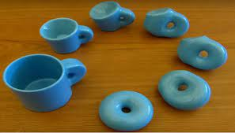

Books and links
the books presented below are very good in revision, the links to these books have been provided as well.

You can always reach me for any clarrification of the above displayed notes and the linked videos.
You are welcome to leave any comments and positive criticm
The units have got notes accaompanied with them, and links where you can use in downloading.
topology is very intresting unit. we can define it as branch of mathematics that deals with properties of objects which are not affected by continous deformation.
topology is very intresting unit. we can define it as branch of mathematics that deals with properties of objects which are not affected by continous deformation.
topology is very intresting unit. we can define it as branch of mathematics that deals with properties of objects which are not affected by continous deformation.
the books presented below are very good in revision, the links to these books have been provided as well.
Below are suggestion by some of the students
.jpg)
Most mathematics students alwyas preffer applied maths to pure related units. Recently I read a book which made me to change my mind and re consider my decision over this.
Most mathematics students alwyas preffer applied maths to pure related units. Recently I read a book which made me to change my mind and re consider my decision over this.